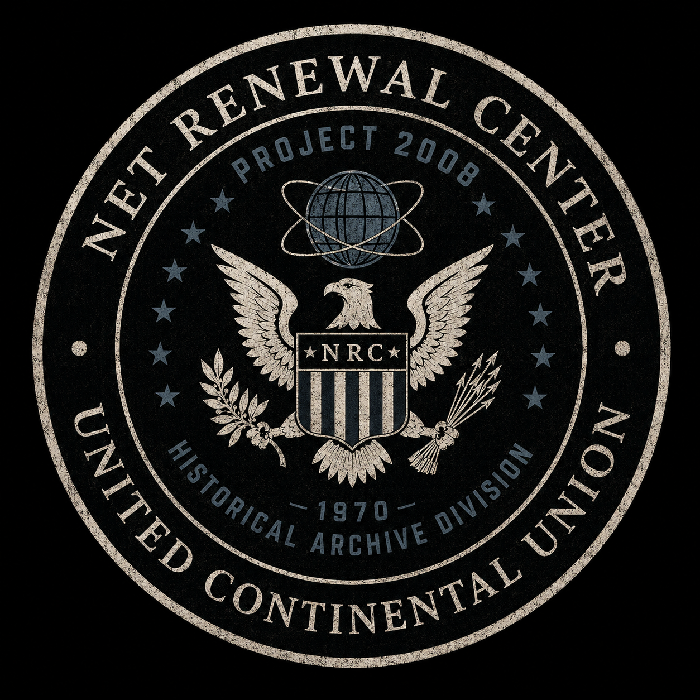
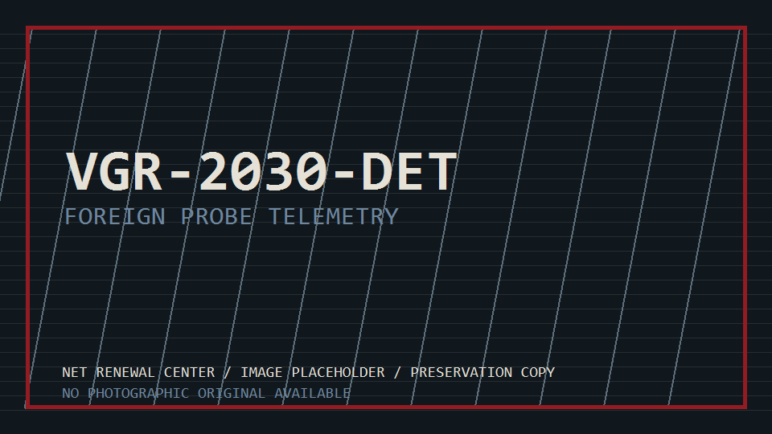
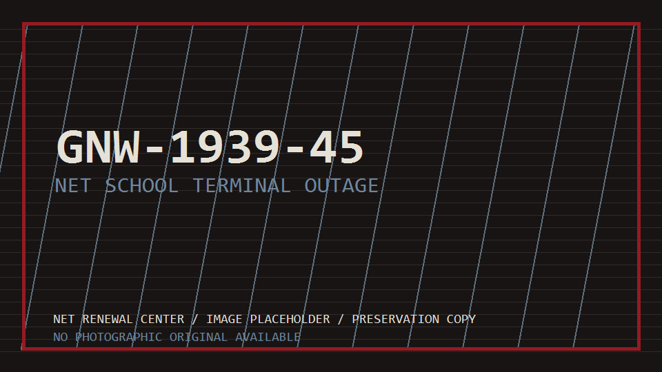
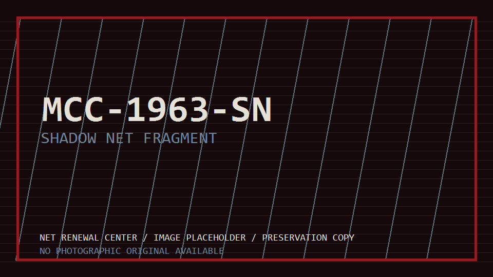

Access Granted
PROJECT 2008
NET Renewal Center Historical Archive

Recovered Categories
Image Evidence



Unauthorized duplication of Deep Crimson records is punishable under Renewal Act emergency provisions. Cross-reference archive ID MCC-1963-SN only when preservation integrity permits.